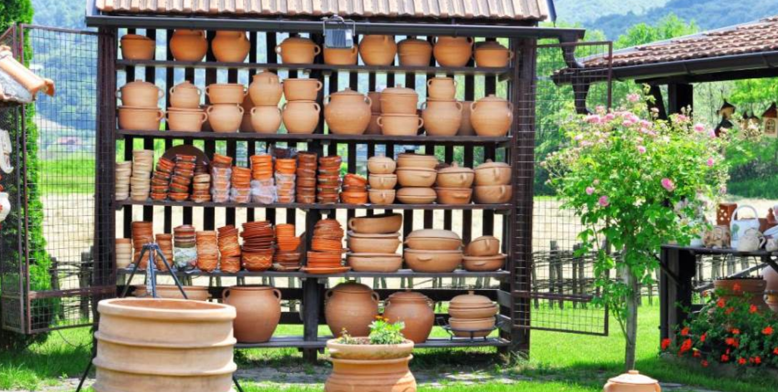

Nasa skola kurseva zanata počela je sa radom 2015. godine i od tada je stekla bogato iskustvo u
podučavanju kreativnih zanata.
Vajanje, slikarstvo, stolarstvo, akvarel su samo neki od kurseva predvidjeni planom nase skole.
Organizovani smo tako da se u prvoj polovini godine odvijaju kursevi:
Nasa skola kurseva, organizuje kurs vajarstva u kojem je moguće savladati osnovne i napredne tehnike vajanja, opšta pravila i korake u izradi skulptura, kao i oprobati se u manje ili više zahtevnim izazovima sopstvene mašte. Svake godine se prijavi najmanje 100 ljudi za svaki nivo kursa, pa je ovo lepa prilika ne samo da se nauci nesto novo, vec i upoznaju novi ljudi.
Kroz kvalitetno provedeno vreme u radionicama, uz druženje u veseloj atmosferi, polaznici kursa crtanja se upoznaju, kako sa klasičnim, tako i modernim tehnikama. Kurs crtanja i slikanja pruža jedinstvenu priliku da se družite sa budućim umetnicima, kojima je kurs slikanja za početnike podjednako važan kao i vama, ali i sa profesionalcima u svom poslu.
Dok je druga polovina godine predvidjena za ostale zanate koje organizujemo u skladu sa vasim zeljama i potrebama, u prvoj polovini godine se fokusiramo na vajarstvo i slikarstvo. Učenje zanatstva u nasoj skoli se bazira na različitim kreativnim i inovativnim metodama, a sve u skladu sa različitim zanatima, vrsti ili trajanju kursa. Pored toga, metode nastave se neprekidno usavršavaju u skladu sa svetskim tendencijama u oblasti podučavanja zanata. Bez obzira na zanat, vrstu i trajanje kursa, na našim kursevima velika pažnja se posvećuje motivisanju polaznika da razvijaju svoje sposobnosti učenja izabranog zanata i na efikasan i jednostavan način prošire svoje znanje. Iako su polaznici odabrali jedan kurs, trudimo se da ih zainteresujemo i za druge opcije, tako da mogu da prosire svoje znanje na vise oblasti.
Učionice u kojima se odvija nastava su prijatna, klimatizovana i moderno opremljena mesta, različite kvadrature u zavisnosti od namene- za pojedince, veće ili manje grupe, decu. Sve učionice imaju računare i pratećuopremu, plazma televizore i ozvučenje i sve su povezane sa internetom. Sve ovo ima za cilj da se polaznici osećaju što prijatnije jer se samim tim i nastava uspešnije obavlja.
Ono na šta smo veoma ponosni jeste da kroz naše skole zanata tokom jedne kalendarske godine prođe oko 5.000 polaznika! Naši kursevi namenjeni su deci predškolskog i školskog uzrasta,srednjoškolcima i odraslima. Godine ne predstavljaju nikakvu barijeru u pohađanju kurseva zanata. U zavisnosti od potreba polaznika, kursevi se mogu izvoditi za jednu osobu, dve osobe ili za grupe od 3-12 polaznika. Dinamika nastave je prilagođena potrebama polaznika naših kurseva, tako da oni mogu da biraju da li će ići na klasični kurs koji se izvodi dva puta nedeljno po 90 minuta, na ubrzani ili individualni koji se izvode tri ili više puta nedeljno i traju onoliko koliko je polazniku potrebno. Grupni kursevi za decu se izvode dva puta nedeljno po 45 minuta, a individualni dečji kursevi se izvode u zavisnosti od potreba polaznika. Trajanje opštih kurseva za odrasle je od 2 do 5 meseci u zavisnosti od nivoa, a dečjih je tokom cele školske godine.
U nastavku mozete pogledati datume pocetka i zavrsetka kurseva:
| Naziv kursa | Nivo kursa | Datum pocetka kursa | Datum zavrsetka kursa |
|---|---|---|---|
| Stolarija | Osnovni kurs | 1.10.2021. | 1.3.2022. |
| Srednji kurs | 15.10.2021. | 1.2.2022. | |
| Napredni kurs | 1.11.2021. | 29.12.2021. |
| Naziv kursa | Nivo kursa | Datum pocetka kursa | Datum zavrsetka kursa |
|---|---|---|---|
| Vajarstvo | Osnovni kurs | 5.10.2021. | 5.3.2022. |
| Srednji kurs | 20.10.2021. | 5.2.2022. | |
| Napredni kurs | 5.11.2021. | 29.12.2021. |
Na kraju svakog kursa, radove nasih polaznika izlazemo na raznim lokacijama sirom zemlje.

Najbolji program za brzo ucenje! Sa lakoćom sam savladala cetvoromesecni kurs vajarstva. Sve pohvale!
Milica iz Zrenjanina.
Jedno divno iskustvo! Mentori su puni razumevanja i strpljivi za sve greske. Sada krecem na napredni kurs iz slikarstva. Jedva cekam!
Ana iz Krusevca
Zaista lepo provedeno vreme! Svaka dan sam iscekivala casove vajarstva. Hvala puno!
Sara iz Negotina